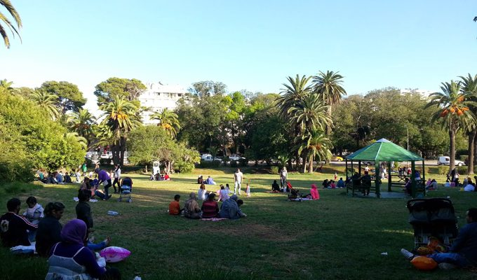
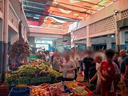

Ariana
La Ville des Jardins - Entre Nature et Modernité
À propos de Ariana
L'Ariana est une ville stratégique du nord de la Tunisie et le chef-lieu du gouvernorat éponyme. Faisant partie intégrante de l'agglomération du Grand Tunis, elle est située immédiatement au nord de la capitale, Tunis.
Emplacement
L'Ariana bénéficie d'une position privilégiée dans la plaine fertile de la région, bordée par la mer Méditerranée au nord et à l'est. Elle jouxte directement le gouvernorat de Tunis au sud, le gouvernorat de Ben Arous au sud-est et le gouvernorat de la Manouba à l'ouest, la plaçant au cœur de la dynamique urbaine et économique de la capitale.
Histoire
L'histoire de l'Ariana remonte à l'Antiquité, possiblement liée à la période punique et romaine. Son nom actuel dériverait des "Arianae" (les Ariens), qui étaient des Vandales de confession arienne installés dans la région après la conquête de Carthage par Genséric au Ve siècle. Cependant, son apogée historique survient durant la période médiévale, sous les dynasties Aghlabides et Hafsides, où elle est réputée pour ses vastes vergers. Elle devient alors célèbre comme la "cité des roses", une culture florale qui marquait profondément son identité et sa renommée à travers le Maghreb.
Caractéristiques
- Pôle Urbain Résidentiel : L'Ariana est aujourd'hui principalement une vaste banlieue résidentielle pour la capitale, caractérisée par une croissance démographique rapide et l'expansion de quartiers modernes et aisés.
- Économie et Éducation : Elle est un centre d'activité important, abritant des zones industrielles, des parcs technologiques (comme le Pôle Technologique El Ghazala) et plusieurs établissements d'enseignement supérieur et de recherche.
- Patrimoine Naturel : Bien qu'urbanisée, la région conserve des espaces verts significatifs et des terres agricoles.
- Culture: La tradition de la rose y est toujours vivace, célébrée annuellement par le Festival de la Rose, qui maintient un lien avec son héritage historique et son surnom.
Top Places à Visiter
1. Le Parc Ennahli
est un grand espace vert semi-sauvage situé au nord de la ville. Il offre des sentiers de randonnée pédestre, des aires de jeux pour enfants, des tables de pique-nique et un parcours de santé bien tracé. C'est un lieu idéal pour la détente en famille ou pour faire du sport.

2.Le Marché Municipal de l'Ariana
est l'endroit parfait pour découvrir la vie locale, les produits frais et l'ambiance authentique de la ville.

3.Le Palais de Borj Baccouche
est un monument historique dont l'architecture unique mêle les styles andalou et tunisien. Il a été construit au XVIIIe siècle et a récemment accueilli des expositions d'art.
.jpg)
- Popolare Trattoria : Un restaurant italien napolitain très apprécié, réputé pour ses pizzas et pâtes fraîches de qualité. L'ambiance y est agréable et décontractée, avec des options de places à l'extérieur.
- Red Castle The Restaurant : Un établissement offrant une excellente cuisine syrienne et libanaise dans un beau décor. Les portions sont généreuses et le service est très bon.
- LA casa mia : Pour une expérience culinaire tunisienne authentique, ce restaurant mise sur des recettes traditionnelles. Les plats sont savoureux, les lieux propres et le rapport qualité-prix est excellent.
- ABUELA'S CAFE : Ce café est très apprécié pour son ambiance zen, sa terrasse agréable et son accueil chaleureux. La carte est variée, proposant des petits déjeuners, des snacks et une bonne sélection de cafés et cocktails.
- Everest Coffee : Connu comme l'un des meilleurs cafés de la région, il offre un bel endroit sans prétention pour déguster du thé ou du café, souvent avec des gâteaux faits maison.
- Paulette : Bien que souvent présenté comme un café ou un lieu de brunch, Paulette propose également des plats salés (comme des pâtes) et des pâtisseries. Le service est rapide et l'ambiance y est toujours plaisante.